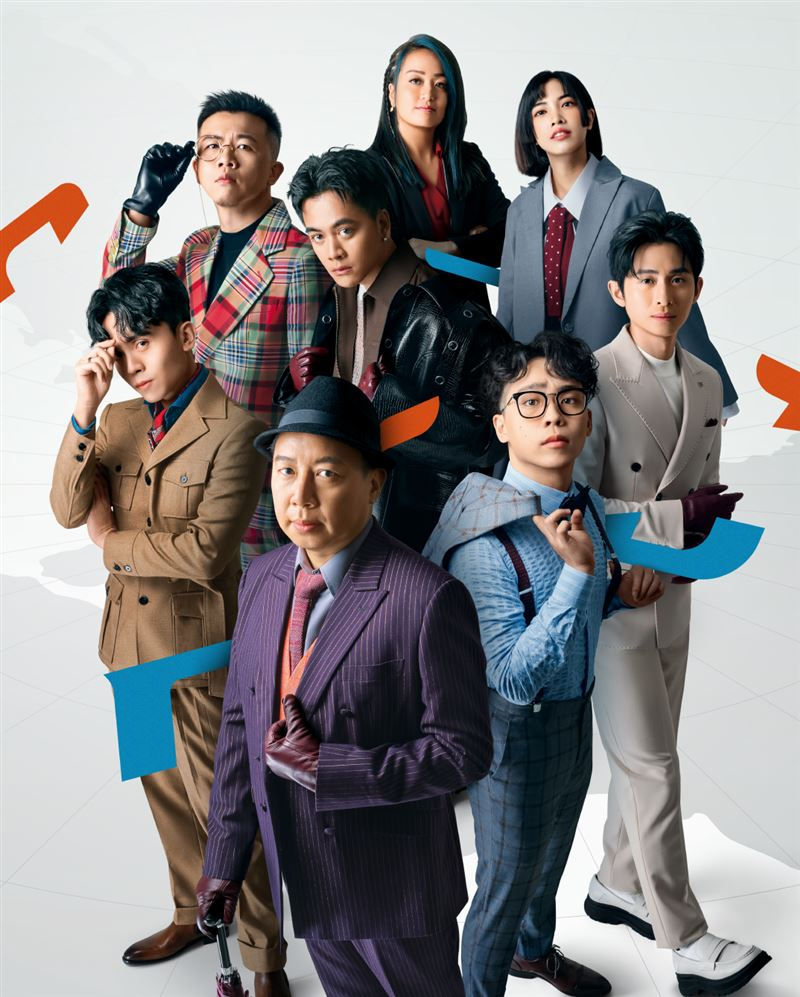
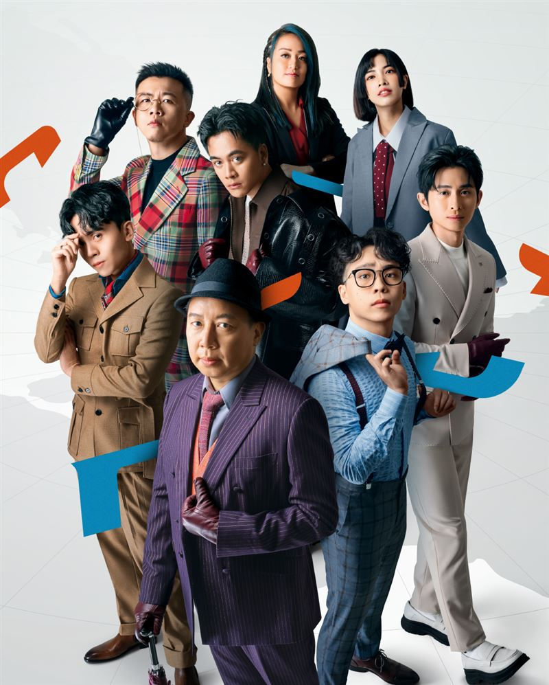

STR Network Youtube頻道
薩泰爾娛樂（英語：STR Network）為台灣的娛樂公司，以曾博恩主持的政治脫口秀《博恩夜夜秀》聞名。名稱取自英文「諷刺（satire）」的音譯，希望能作為中文世界言論自由的先鋒，專攻批判型娛樂需求，目標是成為以諷刺脫口秀為核心的娛樂集團。
薩泰爾娛樂（英語：STR Network）為台灣的娛樂公司，以曾博恩主持的政治脫口秀《博恩夜夜秀》聞名。名稱取自英文「諷刺（satire）」的音譯，希望能作為中文世界言論自由的先鋒，專攻批判型娛樂需求，目標是成為以諷刺脫口秀為核心的娛樂集團。
